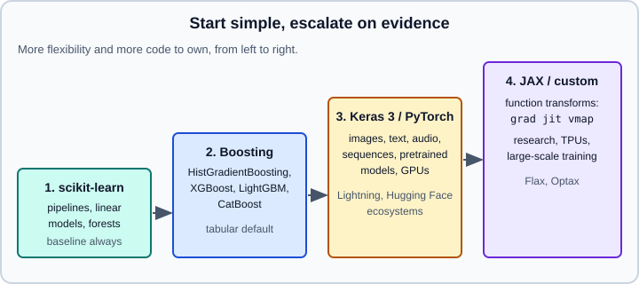

Choosing a Framework
|
This content was generated with the assistance of AI and should be verified against the official documentation before being relied on in production. |
Most machine learning problems can be solved in more than one framework, and the wrong choice rarely makes the project impossible, only slower or more expensive to maintain. This page gives decision questions, a comparison of the options and a minimal runnable example of each, so that the trade-offs are concrete.
The comparison targets Python 3.13, PyTorch 2.15, TensorFlow 2.21 with Keras 3.15, scikit-learn 1.9, XGBoost 3.4, LightGBM 4.7, CatBoost 1.2 and JAX 0.12, and was checked on 2026-10-30 against the package index and the official documentation. TensorFlow 2.22 is a release candidate (upcoming) and PyTorch 2.16 is not released, so neither is covered. Examples were run on Python 3.13 with scikit-learn 1.9.1, XGBoost 3.4.1, PyTorch 2.15 (CPU), Keras 3.15 (on the JAX backend for the backend example, on TensorFlow 2.21 for the wrapper example) and JAX 0.12 on 2026-11-01. The data-science view of the same choice (pandas, Polars, DuckDB, statsmodels) is in Choosing Tools & Learning Path; model-family guidance inside scikit-learn is in Choosing an Estimator.
Decision questions
Ask these in order. The first answer that rules out an option usually settles the choice.
-
What is the data? Rows and columns (tabular) point to scikit-learn and gradient boosting. Images, audio, long text and graphs point to neural networks in PyTorch or Keras, usually starting from a pre-trained model.
-
How much data and compute? A few thousand rows rarely justify a neural network. Large models need GPUs or TPUs, mixed precision and distributed training (see Hardware & Mixed Precision and Distributed Training).
-
Does a pre-trained model exist? Fine-tuning a model from the Hub or from KerasHub often removes the need to choose a training loop at all (see Transfer Learning & Foundation Models).
-
Where will it run? A web service, a phone, a browser, an embedded device and a batch job have different runtimes (see Deploying & Serving Models and ONNX & Interoperability).
-
Who maintains it? A team that already knows a framework is faster in it. Hiring, existing code, and available examples are real costs.
-
How custom is the maths? Standard layers and losses fit Keras or PyTorch modules. Research on new training algorithms or on hardware-specific compilation may fit JAX.

The options compared
| Framework | Strengths | Costs | Choose it when |
|---|---|---|---|
scikit-learn 1.9 |
One estimator API, pipelines, cross-validation, search, metrics, persistence; CPU, mature, stable |
Not for deep learning or GPU training of large models; limited out-of-core support |
Tabular data, baselines, preprocessing, evaluation, classical algorithms |
Gradient boosting (XGBoost 3.4, LightGBM 4.7, CatBoost 1.2, |
Usually the most accurate on tabular data with little tuning; fast; handle missing values; scikit-style APIs |
Not for images or text without feature extraction; each library has its own parameters |
Tabular prediction where accuracy matters |
PyTorch 2.15 |
Eager Python-first design, dominant in research and in the Hugging Face ecosystem, |
You write the training loop; a larger ecosystem to learn; TorchScript is deprecated |
Deep learning in general, custom models, using Hub models, research |
Keras 3.15 |
High-level API ( |
Fewer low-level hooks than raw PyTorch; backend differences in some features |
Fast prototyping, teams that want one API across backends, TensorFlow deployment targets |
TensorFlow 2.21 |
Mature serving and mobile path (TF Serving, LiteRT), |
In maintenance: Google’s 2026-03-06 announcement describes security and critical fixes, dependency updates and community fixes; new generative-AI work is directed to Keras 3, JAX and PyTorch |
Existing TF systems, TF Serving or LiteRT deployments |
JAX 0.12 |
Composable function transforms ( |
Still 0.x with API changes; Python 3.12 or newer; functional style with explicit state; a smaller ecosystem |
Research on new methods, TPU-heavy training, numerical computing |
TensorFlow is not deprecated and continues to receive security and critical fixes, but a team starting in 2026 should compare it with Keras 3 on another backend rather than assume it is the default. The package tensorflow (2.21) installs Keras 3 as keras; tf.keras is Keras 3 since TensorFlow 2.16, and the Keras 2 implementation lives on as the tf_keras package in maintenance mode.
scikit-learn: the default for tabular data
Begin here, even when the final model is something else. A scikit-learn baseline takes minutes and tells you how hard the problem is. It also provides the evaluation, preprocessing and search tooling that other frameworks plug into.
from sklearn.compose import make_column_transformer
from sklearn.datasets import fetch_openml
from sklearn.ensemble import HistGradientBoostingClassifier
from sklearn.model_selection import cross_val_score
from sklearn.pipeline import make_pipeline
from sklearn.preprocessing import OneHotEncoder, StandardScaler
from sklearn.linear_model import LogisticRegression
X, y = fetch_openml("adult", version=2, as_frame=True, return_X_y=True)
num = X.select_dtypes("number").columns
cat = X.select_dtypes(exclude="number").columns
linear = make_pipeline(
make_column_transformer((StandardScaler(), num), (OneHotEncoder(handle_unknown="ignore"), cat)),
LogisticRegression(max_iter=1000),
)
boost = HistGradientBoostingClassifier(categorical_features="from_dtype", random_state=0)
for name, model in [("logistic regression", linear), ("hist gradient boosting", boost)]:
scores = cross_val_score(model, X, y, cv=5, scoring="roc_auc")
print(f"{name:24s} AUC {scores.mean():.3f} +/- {scores.std():.3f}")HistGradientBoostingClassifier handles missing values and, with categorical_features="from_dtype", pandas categorical columns without one-hot encoding. Compare the two scores before spending time on anything more complex. More detail is in Gradient Boosting and Tabular Data & Gradient Boosting.
Gradient boosting libraries
XGBoost, LightGBM and CatBoost implement the same idea with different engineering choices, and all three offer a scikit-learn-compatible estimator, so they work inside pipelines, cross-validation and search. Their ideas on speed (histogram splits, GPU training), categorical features (CatBoost’s ordered target statistics) and regularisation differ in the details.
from sklearn.datasets import make_classification
from sklearn.model_selection import train_test_split
from xgboost import XGBClassifier
X, y = make_classification(n_samples=5000, n_features=20, n_informative=8, random_state=0)
X_tr, X_te, y_tr, y_te = train_test_split(X, y, random_state=0)
model = XGBClassifier(
n_estimators=2000, learning_rate=0.05, max_depth=4, subsample=0.8,
early_stopping_rounds=50, eval_metric="auc", tree_method="hist", random_state=0,
)
model.fit(X_tr, y_tr, eval_set=[(X_te, y_te)], verbose=False)
print("best iteration:", model.best_iteration, "AUC:", round(model.best_score, 4))Source: XGBoost: scikit-learn wrapper
Early stopping on a validation set chooses the number of trees; use a separate validation split (not the final test set) in real work. LightGBM moved to the lightgbm-org GitHub organisation (github.com/lightgbm-org/LightGBM), so older links may redirect. For tuning with Optuna, OptunaSearchCV is in the separate optuna-integration package (optuna_integration.OptunaSearchCV), not in optuna.integration.
PyTorch
PyTorch exposes tensors, automatic differentiation and modules, and leaves the training loop to you. This is its strength (everything is ordinary Python you can debug) and its cost (you write the loop, the checkpointing and the logging, or you adopt a library for them).
import torch
from torch import nn
device = torch.accelerator.current_accelerator() or torch.device("cpu")
model = nn.Sequential(nn.Linear(20, 64), nn.ReLU(), nn.Linear(64, 1)).to(device)
optimizer = torch.optim.AdamW(model.parameters(), lr=1e-3)
loss_fn = nn.BCEWithLogitsLoss()
X = torch.randn(512, 20, device=device)
y = (X[:, 0] + X[:, 1] > 0).float().unsqueeze(1)
for epoch in range(20):
model.train()
optimizer.zero_grad()
loss = loss_fn(model(X), y)
loss.backward()
optimizer.step()
model.eval()
with torch.inference_mode():
acc = ((model(X) > 0).float() == y).float().mean().item()
print("accuracy:", round(acc, 3))
torch.save(model.state_dict(), "model.pt") # save weights, not the whole pickled model
state = torch.load("model.pt", weights_only=True) # the default since PyTorch 2.6torch.load uses weights_only=True by default since PyTorch 2.6, so code that pickles an entire model with torch.save(model) and loads it with a bare torch.load(path) now fails; save the state_dict. Other changes affect old tutorials: torch.autograd.Variable is unnecessary, torch.cuda.amp.autocast and GradScaler are deprecated in favour of torch.autocast("cuda") and torch.amp.GradScaler("cuda"), and TorchScript (jit.trace, jit.script) is deprecated in favour of torch.export.
Libraries built on PyTorch reduce the boilerplate:
-
PyTorch Lightning (2.6) structures the loop in a
LightningModuleand aTrainer, with distributed training and logging integrations. -
Hugging Face Transformers provides thousands of pre-trained models and a
Trainer; see the Hugging Face section. -
skorch (1.4) wraps PyTorch modules in scikit-learn estimators so they work in pipelines and
GridSearchCV.
Some projects around PyTorch have ended: TorchServe was archived in August 2025 and receives no security patches, torchtext is archived (last release 0.18) and torchtune is no longer maintained. Prefer maintained serving options (see Deploying & Serving Models).
Keras 3
Keras 3 is a high-level API that runs on several backends. Set the backend with the KERAS_BACKEND environment variable before importing Keras, and the same model code runs on JAX, TensorFlow or PyTorch.
import os
os.environ["KERAS_BACKEND"] = "jax" # or "tensorflow", "torch"
import keras
import numpy as np
X = np.random.rand(1000, 20).astype("float32")
y = (X[:, 0] + X[:, 1] > 1).astype("float32")
model = keras.Sequential([
keras.Input(shape=(20,)),
keras.layers.Dense(64, activation="relu"),
keras.layers.Dense(1, activation="sigmoid"),
])
model.compile(optimizer="adam", loss="binary_crossentropy", metrics=["accuracy"])
model.fit(X, y, epochs=5, batch_size=32, validation_split=0.2, verbose=0)
model.save("model.keras") # the .keras archive: architecture, weights, optimizer state
restored = keras.saving.load_model("model.keras")
print(restored.evaluate(X, y, verbose=0))Keras 3 has its own saving rules (the .keras archive, .weights.h5 for weights only, model.export() for inference formats), and import keras is the supported import; from tensorflow import keras and tf.keras map to the same Keras 3 package in TensorFlow 2.16 and later. The keras.distribution API works only with the JAX backend; with TensorFlow use tf.distribute.
To use a Keras model inside a scikit-learn pipeline or search, use Keras 3’s built-in wrappers keras.wrappers.SKLearnClassifier, SKLearnRegressor and SKLearnTransformer. They take a compiled model or a builder function and implement the scikit-learn API. SKLearnClassifier one-hot encodes the labels before it calls the builder, so the builder receives y with one column per class and the model needs categorical_crossentropy, not the sparse variant.
import keras
from keras.wrappers import SKLearnClassifier
from sklearn.datasets import make_classification
from sklearn.model_selection import GridSearchCV
def build(X, y, units=16):
n_classes = y.shape[1] if y.ndim > 1 else 1 # the wrapper one-hot encodes y before calling build
model = keras.Sequential([
keras.Input(shape=(X.shape[1],)),
keras.layers.Dense(units, activation="relu"),
keras.layers.Dense(n_classes, activation="softmax"),
])
model.compile(loss="categorical_crossentropy", optimizer="adam")
return model
X, y = make_classification(n_samples=500, n_features=10, random_state=0)
est = SKLearnClassifier(model=build, model_kwargs={"units": 16})
grid = GridSearchCV(est, {"model_kwargs": [{"units": 8}, {"units": 32}]}, cv=3)
grid.fit(X, y, epochs=5, verbose=0) # fit arguments are passed through to every clone
print(grid.best_params_) # {'model_kwargs': {'units': 32}}The fit arguments go to grid.fit rather than to fit_kwargs, because in Keras 3.15.1 the wrapper’s clone keeps model_kwargs but drops fit_kwargs, so every clone made by GridSearchCV or cross_val_score would silently train for a single epoch.
Source: Keras: scikit-learn wrappers
SciKeras, the older community wrapper, is archived (read-only on GitHub, last release 0.13.0 in April 2024), although the TensorFlow 2.13 release notes and scikit-learn’s related-projects page still point to it. Use it only for legacy code. TensorFlow’s own tf.keras.wrappers.scikit_learn was removed in TensorFlow 2.13.
TensorFlow
Choose TensorFlow when you already operate it, or when a deployment target requires its tooling: TF Serving for servers, LiteRT (formerly TensorFlow Lite) for mobile and edge, and the long-standing tf.data input pipeline. Models built in Keras 3 on the TensorFlow backend can be exported to SavedModel, ONNX, LiteRT and other formats with model.export(). Estimators, tf.contrib, sessions and placeholders from TensorFlow 1 are gone; code from older books needs a rewrite, not a patch. See the ONNX & Interoperability page for moving models between frameworks, and note that TensorFlow.js and TensorFlow Probability have not published a release since 2024 at the time of the check.
JAX
JAX is NumPy-like array code plus composable transformations: jax.grad differentiates, jax.jit compiles with XLA, jax.vmap vectorises. State is explicit and functions must be pure, which rewards discipline and removes whole classes of hidden bugs. Flax (neural network modules) and Optax (optimisers) are the common building blocks. JAX 0.12 is still a 0.x release with Python 3.12 or newer required, so pin the version and read the changelog on upgrade.
import jax
import jax.numpy as jnp
def loss(params, X, y):
w, b = params
logits = X @ w + b
return jnp.mean(jnp.logaddexp(0.0, logits) - y * logits) # logistic loss
@jax.jit
def step(params, X, y, lr=0.1):
grads = jax.grad(loss)(params, X, y)
return jax.tree.map(lambda p, g: p - lr * g, params, grads)
key = jax.random.key(0)
X = jax.random.normal(key, (512, 5))
y = (X[:, 0] > 0).astype(jnp.float32)
params = (jnp.zeros(5), jnp.zeros(()))
for _ in range(200):
params = step(params, X, y)
print("final loss:", float(loss(params, X, y)))JAX is not supported by scikit-learn’s Array API dispatch, which targets NumPy, PyTorch, CuPy and a few others. Keras 3 can use JAX as a backend if you want JAX’s performance with a higher-level API.
Interoperability and portability
-
Export to ONNX when the serving runtime is not Python. ONNX Runtime lags behind ONNX: ORT 1.31 still depends on ONNX 1.22 (opset 27) while ONNX 1.23 defaults to opset 28, and ORT’s published compatibility table is stale. Export with an opset no newer than your runtime supports, and do not hard-code a value in
torch.onnx.export, which uses the dynamo exporter by default since PyTorch 2.9. -
Keep the training and serving environments aligned on library versions; see Deploying & Serving Models.
-
Weights are portable more often than code. Hugging Face model files in safetensors format load in PyTorch, JAX and TensorFlow; see Model Formats.
-
Beware pickle-based files from untrusted sources; see Supply Chain Security.
Where older books and tutorials are outdated
Older books present TensorFlow as the industry default, standalone Keras on TensorFlow 1, SciKeras or tf.keras.wrappers.scikit_learn, Theano and MXNet, and PyTorch idioms such as Variable and pretrained=True; all of these have changed. The overview table is in Learning Resources, and the framework-specific migrations are in Legacy APIs & Migration, Migrating from TensorFlow 1 and Migrating from Keras 2 to Keras 3.